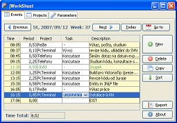

jWorkSheet
Tento program slouží k mìøení vašeho èasu stráveného na projektech.
Projekt je ve fázi betaverze, ale jeho základní funkce lze již bez problémù pouŸívat.
Pro start stisknìte tlaèítko:

Návod k použití
Názorná prezentace pro použití programu JWorkSheet je zde (German version).
Instalace
Pokud si chcete program nainstalovat, kliknìte zde: instalaèní program.
Po spuštìní poèítaèe se vám pak vždy automaticky spustí i poslední verze programu JWorkSheet.
Vlastní reporty:
Od verze 0.54 je možné vytvoøit si vlastní tiskové výstupy. Postup pro Windows je následující:
- zkopírovat soubor "C:\Documents and Settings\USER\.jWorkSheet\styles\ReportBase.xsl" do XSL souboru jiného
- pomocí textového editoru zmìnit obsah toho nového XSL souboru pro transformaci zdrojového souboru data.xml
Nìjaké informace o XSL lze najít zde:
Minimální požadavky
